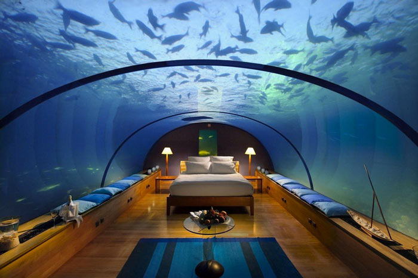

Welcome to Earth’s first underwater city and the future of urban living. Aqua offers a variety of living options to suit your needs from single family homes to seascrapers and group living pods.
The H2ome represents the world's first undersea residence - a structure that you can purchase today. You can choose your own sea-floor site, or we can set you up with a remarkable undersea location. Remember, the entire undersea structure is at surface pressure, so there is no diving or de-compression necessary to inhabit this wondrous luxury sea floor residence.
Seascraper is essentially a small village. The main house, the "whirlpool," acts as a village commons with individual dwelling units arranged around the perimeter.
Have a group of family or friends that you want to live near? Aquapod could be for you. Offering private living quarters with some shared amenities allows for the future of co-habitation.